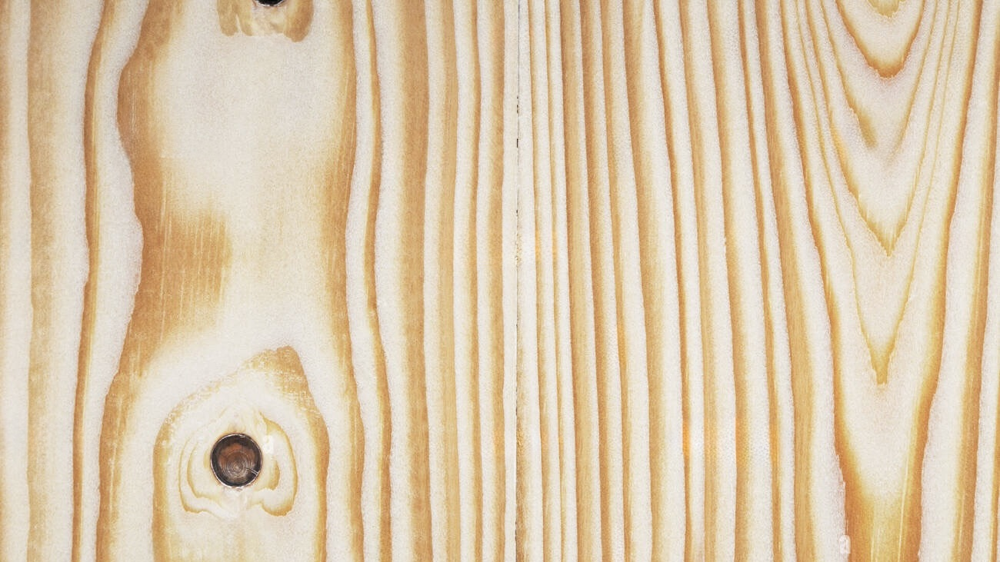
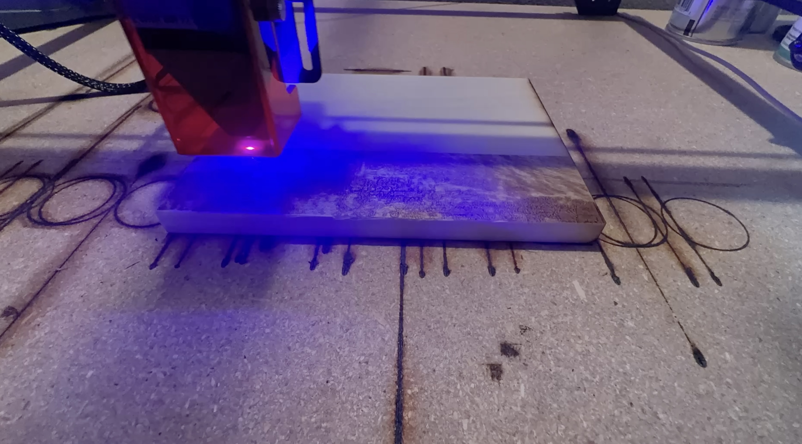

Behind the scenes, tips, and stories from the shop.
Tips & IdeasApril 2026
How to Give a Gift That Actually Means Something
Most gifts don’t last.
Not physically—they last. But mentally, they don’t stick. A lot of them end up sitting on a shelf, getting used for a week, or just blending in with everything else.
That’s not what you want when you give something to someone. You want them to look at it and remember why they got it. You want it to feel intentional. That’s where engraved pieces hit differently..
Why People Actually Keep These: People hold onto things that feel personal. Not complicated—just personal. A place they recognize. A verse that means something. A design that feels familiar. That’s what makes someone keep something long-term instead of tossing it aside later. That’s the whole idea behind Mozart Laser. Clean designs, real materials, and no shortcuts
The Big Ben Plaque (New Release) The newest piece is the Big Ben plaque, engraved into poplar wood. It’s beautiful and makes the perfect decoration gift. The detail of the tower comes through clean, and the natural grain of the wood gives it just enough variation to make each one feel slightly different. It doesn’t look mass-produced, because its not.
It works well if you want something: • Classic without being boring
• Meaningful without needing customization
• Easy to gift without overthinking it
It’s Also Discounted Right Now! Since it’s a new release, it’s currently priced lower than it normally will be. No gimmicks—just a good time to grab one if you were already considering it.
Behind the ScenesMarch 2026
How We Made the Golden Gate Bridge Plaque
From sketch to engraving — a full walkthrough of our design process.
Every plaque starts with a problem: how do you capture something iconic in a few millimeters of burned wood?
The Golden Gate Bridge took 3 iterations before we felt like we had it right. The towers needed weight.
The cables needed to be visible. The water beneath had to read as water without becoming noise.
The finished Golden Gate Bridge plaque — poplar wood, hand-finished in California.
We start every design in Adobe Illustrator, tracing from reference photos and simplifying down to what the laser
can actually render cleanly at small scale. Fine detail looks great on screen and disappears on wood —
so the art is really in knowing what to leave out.
Once the vector is dialed in, we run test burns on scrap pieces of the same wood stock. Every board has a slightly
different grain density, which affects how dark the burn comes out. We adjust power and speed until the contrast
feels right — not too burnt, not too faint.
The final step is hand-finishing — a light sand to knock back any char smell, then a protective sealing spray to help the engraving last and stay sharp. We only ship it to you when we feel it is good enought to display in our own home.
ProcessFebruary 2026
Wood Types We Use and Why
Not all wood engraves the same. Here's how we choose.
One of the first questions we get from custom order customers is: "What kind of wood is it?" The honest answer
is that it depends — on the design, the use case, and what kind of look we're going for.

Pine Wood is our go-to for detailed work. It's rich, close-grained, and produces a high-contrast
burn that makes fine lines and small text pop cleanly. It's forgiving with the laser and consistent across boards.
Poplar is for pieces that need presence. The light, soft grain means the engraving reads differently — Images engrave very well on it because of its ability to show many different shades, from dark burns to light texture.
When you place a custom order, just let us know if you have a preference — or describe what you're going for
and we'll make the call. We keep multiple species in stock and can usually match the right wood to the right project.
Our StoryJanuary 2026
Why We Started Mozart Laser
Built to be kept, not forgotten.
Mozart Laser started with a simple frustration—most gifts feel temporary. They’re used for a while, then forgotten. We wanted to make something different. Using real wood and precise engraving, each piece is designed to feel intentional from the start.

The name came from a simple idea: great craft should feel like music. Precise, intentional, and worth sitting
with. Mozart wrote pieces that were technically demanding and emotionally immediate at the same time.
That's what we want every engraving to be.
Using real wood and precise engraving, each piece is designed to feel intentional from the start. Every order is handled by hand, refined through testing, and finished carefully so it doesn’t just look good for a moment—it becomes something people hold onto.